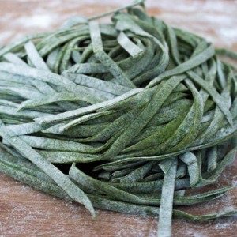
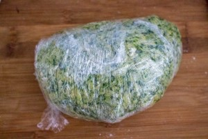
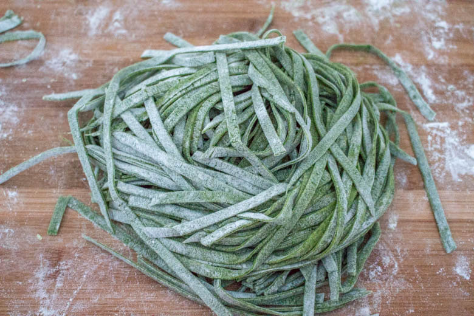

Pâtes fraîches aux épinards

Bonjour tout le monde, dans cet article vous trouverez la recette des pâtes fraîches aux épinards!
Les pâtes fraîches sont, depuis notre voyage à Rome, devenues une évidence !! Certes il faut prendre le temps de les préparer mais c’est tellement bon qu’on ne peut plus s’en passer ! Depuis quelques temps je prends plaisir à leurs donner toutes sortes de goûts différents et en ce moment on adore celles aux épinards!
Un des tout premier article sur le blog est celui des pâtes fraîches nature (ici) mais pour cette recette, j’ai quelque peu modifié ma recette de base en y ajoutant davantage d’œufs.
La pâte obtenue est du coup beaucoup plus souple, plus molle et élastique mais vous pouvez réaliser cette recette en utilisant la recette de base en ajoutant les épinards comme expliqué dans la recette.
Je pensais que le goût des épinards serait beaucoup plus prononcé mais finalement ça ne l’est pas plus que ça, ce qui permet de faire manger des épinards même aux plus réticents (et ça marche!!). 😉 Vous pouvez choisir de simplement les assaisonner d’un peu de beurre salé ou de quelques tomates cerise revenues avec un peu d’ail et d’une pointe de crème (un vrai régal!) Je vous laisse découvrir la recette et j’espère qu’elle vous plaira !
Ingrédients
- Epinards frais - 180g
- Farine - 420g
- Oeufs - 2
- Jaune d'oeuf - 4
- Huile d'olive - 2 càs
- Sel - 1 grosse pincée
Instructions
- Faire cuire les épinards dans un litre d’eau bouillante salée pendant 10min
- Bien les égoutter puis les sécher
- Hacher les épinards
- Dans une jatte verser la farine, le sel et mélanger
- Créer un puit
- Dans un bol battre très légèrement les œufs entiers et les jaunes (juste assez pour casser les jaunes)
- Les verser dans le puit
- A l’aide d’une fourchette ramener petit à petit la farine au centre pour qu’elle s’incorpore aux œufs jusqu'à obtenir une pâte bien homogène
- Ajouter les épinards hachés
- Pétrir jusqu’à obtenir une pâte bien lisse
- Recouvrir la pâte de cellophane
- Placer la pâte au frigidaire pendant une bonne demie heure au minimum
- Couper la pâte en plusieurs petits pâtons
- Les passer au laminoir successivement en vous arrêtant à l’épaisseur de votre choix (moi je ne les aime pas trop fines alors je m’arrête au cran n°6/7 de ma machine à pâtes) Attention : si la pâte colle trop n’hésitez pas à la fariner au fur et à mesure
- Laisser sécher les bandes de pâtes ou vous pouvez également les passer directement dans la machine à pâtes pour les découper
- Donner la forme que vous souhaitez à vos pâtes (spaghettis, tagliatelles …) et laissez les sécher sur un séchoir à pâtes
- Faire bouillir une grande quantité d’eau salée
- Plonger les pâtes dans l’eau bouillante
- La cuisson peut varier selon si vos pâtes sont très sèches ou non, il faut donc surveiller la cuisson. (pour moi ça ne dure que 3 minutes pour avoir des pâtes al dente) Astuce : vous savez si vos pâtes sont cuites lorsque celles-ci remontent à la surface
- Servir immédiatement !


Les tips de la communauté
Les pâtes fraîches aux épinards sont très bien accueillies avec un nostalgie positive chez ceux qui rappelle l'enfance. Les lecteurs trouvent la recette simple mais utile pour des ateliers en famille.
Astuces
- Faire les pâtes en famille pour un moment convivial et un atelier cuisine
- La patience est essentielle pour réussir les pâtes fraîches mais largement récompensée
- Il est possible d'utiliser des épinards surgelés pour faciliter la préparation